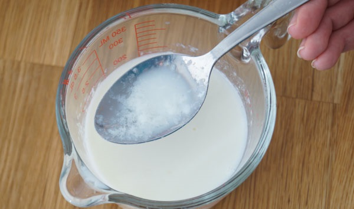
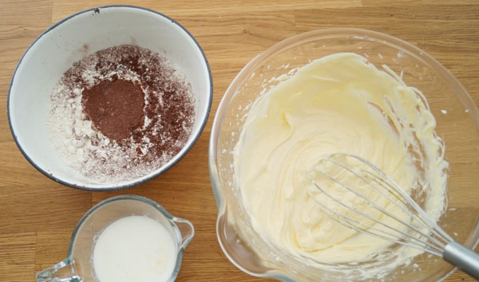
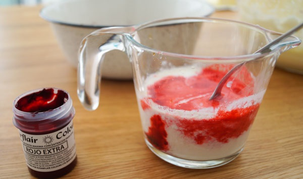
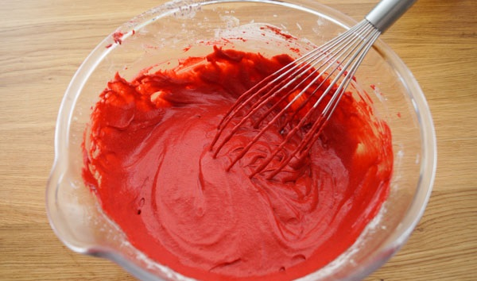
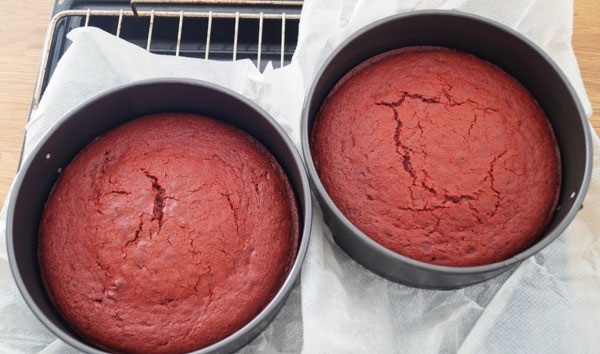
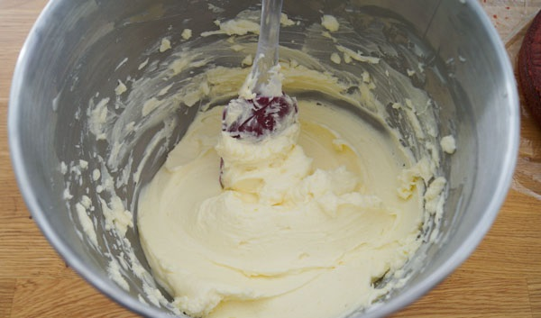
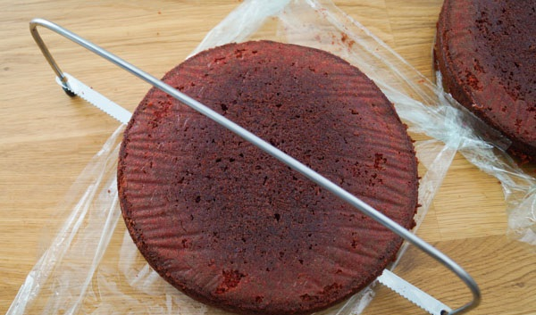
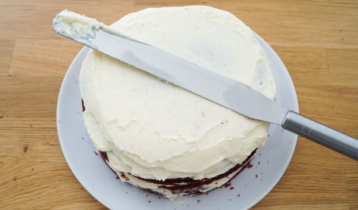

Bolo Red Velvet

Acceso Rapido
O Melhor Bolo De Todos
Aprenda a preparar o famoso bolo Red Velvet, que passa a ser traduzido como veludo vermelho e cujo nome é motivado pela aparência do bolo de esponja que é feito. É um pão de ló úmido e suculento, com um leve toque azedo que é maravilhoso e a cobertura de queijo doce é o que torna a combinação autêntica ... escândalo!
Na receita, estou ensinando todos os truques para obter a melhor textura, a melhor cor, o que é necessário para cortar os bolos, como preenchê-los e qualquer detalhe, para que seja muito fácil preparar esse bolo em casa, pois é ótimo para celebrações e ocasiões especial e seu sabor não deixa ninguém indiferente.
Ingredientes
Para O Bolo
- 130 gr de manteiga sem sal.
- 270 gr de açúcar branco.
- 2 ovos.
- 300 gr de farinha de trigo.
- 1 colher de sopa de cacau em pó puro.
- 1 colher de chá de bicarbonato de sódio..
- Buttermilk: 230 gr de leite integral e 1 colher de sopa de suco de limão.
- 1 colher de chá de corante alimentar vermelho em gel.
- 1 colher de chá de sobremesa de vinagre de vinho branco.
- 1 colher de chá de essência de baunilha ou sabor de baunilha.
Para a cobertura de queijo:
- 150 gr de manteiga sem sal.
- 200 gr de açúcar de confeiteiro.
- 600 gr de queijo creme.
Preparação
- Como precisamos que a manteiga seja cremosa ou chamada de pomada, retire-a da geladeira pelo menos uma ou duas horas antes. Se você não se lembrou de fazê-lo, ele tem uma solução, pois você pode cortá-lo em cubos e, assim, meia hora é o suficiente ou, se você estiver com pressa, coloque o recipiente no microondas por alguns segundos até ver que ele não é mais tão sólido. mas que em nenhum momento derrete.
- Para preparar o buttermilk (leitelho), coloque o leite em um recipiente ou copo e adicione o suco de limão. Mexa um pouco com uma colher e deixe descansar por cerca de 10 minutos, para que o leite seja cortado, pois é o resultado que estamos procurando. É simples de fazer em casa e é ótimo para a textura e o sabor de receitas de panificação como esta.

- Coloque um filtro em cima de uma tigela e despeje a farinha, o bicarbonato de sódio e o cacau em pó puro e passe-os segurando-o com uma mão e batendo suavemente com a outra. Esse processo é chamado peneirar e é usado para fazê-los cair sem caroços ou bolos. Misture e toque um pouco com uma colher.
- Coloque em outra tigela (larga, será a onde finalmente colocaremos tudo junto) a manteiga com o açúcar e bata até obter uma mistura homogênea e macia. Você pode vencer com um robô, com hastes manuais ou elétricas, como eu fiz.
- Quebre um ovo, adicione-o à tigela em que estão a manteiga e o açúcar e bata até ficar bem integrado. Faça o mesmo para o outro ovo.

- Despeje o restante dos ingredientes líquidos na tigela do soro de leite coalhado: o corante vermelho, o vinagre e a baunilha. Misture bem com a ajuda de uma colher.

- Na tigela de manteiga e açúcar, despeje cerca da metade dos ingredientes secos e de todos os líquidos e misture bem, mas sem bater, para manter a leveza da mistura. Você pode simplesmente usar hastes manuais e misturar tudo em círculos.
- Por fim, adicione o restante dos ingredientes secos e misture até o aspecto ficar homogêneo.

- Pré-aqueça o forno a 170ºC com calor para cima e para baixo, sem ar ou ventilador.
- Abra cada um dos dois moldes, coloque papel manteiga em cada base e feche-os novamente, para facilitar a remoção do molde posteriormente. Também gosto de espalhar as laterais com um pouco de manteiga, costumo fazê-lo com meus próprios dedos ou com uma escova de cozinha.
- Distribua a massa nos dois moldes e, quando o forno atingir a temperatura, coloque-os em uma gradinha no forno a uma altura média e deixe cozer por 25 a 30 minutos. Quando eles demoram cerca de 25 minutos, geralmente faço o teste do palito, que consiste em inserir um palito no bolo e, se sair limpo, está pronto, mas, se não, deixo por mais alguns minutos. Nesse caso, é possível que saia com um pouco de cor vermelha, mas com "limpo", quero dizer que não sai com massa colada, um sinal de que está faltando um pouco de cozimento.

- Coloque os moldes em uma gradinha para esfriar um pouco por 10 minutos; em seguida, remova cuidadosamente os biscoitos e envolva-os separadamente com filme plástico para reter a umidade e torná-los muito suculentos.
- O que faço para torná-las o mais suaves possível é colocá-las de cabeça para baixo, para que a parte superior, geralmente mais volumosa, seja suavizada.
- Coloque-os na geladeira imediatamente e deixe descansar por um período mínimo de 4 horas, embora eu goste de prepará-los no dia anterior.
- Para preparar a cobertura, lembre-se de que também precisamos da manteiga cremosa; portanto, retire-a da geladeira com antecedência ou faça o truque de microondas.
- Coloque a manteiga em uma tigela junto com o açúcar de confeiteiro e misture bem, com um robô amassador (como já usei) ou com palitos manuais ou elétricos.
- Em seguida, adicione o cream cheese (faça-o em 3 lotes, despeje 200 gr, misture e faça o seguinte) e misture bem até o resultado ficar macio e macio, sem pedaços de queijo.

- Retire os biscoitos da geladeira e corte-os ao meio. Você também pode deixá-los como estão e ter um bolo com apenas 2 camadas, mas visualmente é melhor 4 e também ao misturar mais com a cobertura, a combinação é fantástica.
- Para cortar os biscoitos, o utensílio mais conveniente é uma lira como a que estou usando, mas você também pode usar uma faca longa e até um tipo de presunto, e algumas pessoas os cortam com um fio bem esticado.

- Para preenchê-los, coloco os biscoitos como estão, ou seja, primeiro o fundo de um, juntamente com a cobertura, coloco o topo do mesmo bolo por cima e continuo. Para estender a cobertura, o ideal é usar uma espátula, embora uma língua de cozinha ou similar também possa atendê-lo.
- Você tem que manchar as 3 camadas intermediárias e quando todo o bolo estiver montado, faça uma camada final do lado de fora. Minha recomendação é que, para as camadas intermediárias, use metade da cobertura e reserve a outra metade para o exterior, embora isso realmente dependa da decoração que você deseja fazer. Eu o deixei no modo "rústico", simplesmente cobrindo-o, mas sem aperfeiçoar as bordas e assim por diante, deixando os biscoitos para apreciar um pouco do lado de fora. Você também pode usar um saco de confeitar para cobrir as camadas interna e externa.

Bolo Red Velvet americana. Receita passo a passo